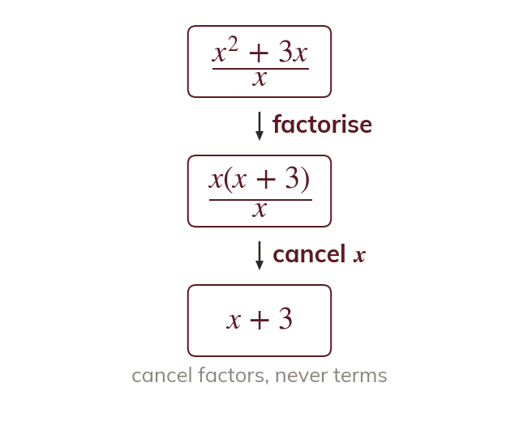
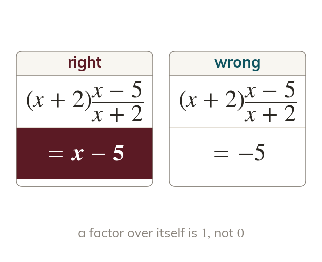
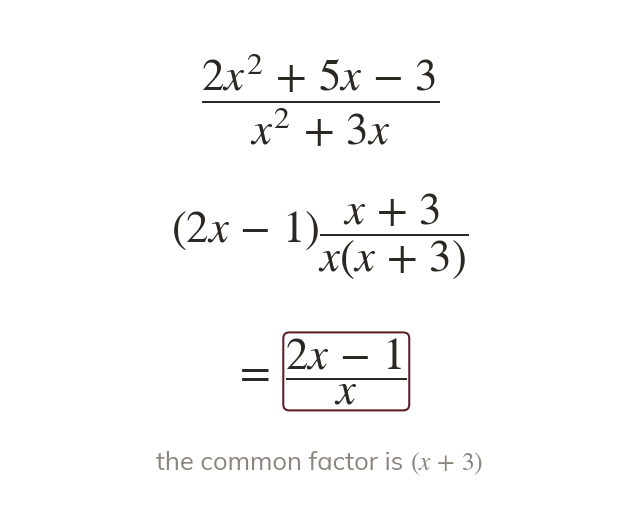
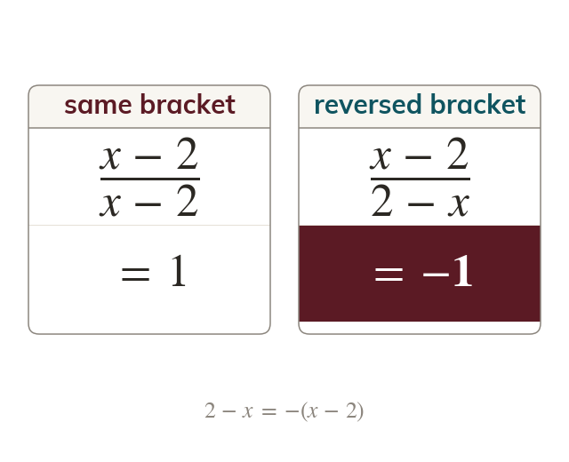

Factorise, then cancel
Only a common factor cancels, never a single term of a sum. Factorising turns the sum into a product.
Algebraic fractions appear in rearranged formulae and in equations at the top of the GCSE. Today we factorise first so that common factors, including brackets, can cancel.
Work down the page at your own pace. Write every answer in your book first, then click to check it.
Read each card, then follow the worked examples one step at a time.

Only a common factor cancels, never a single term of a sum. Factorising turns the sum into a product.

A bracket over itself is
The factor left behind is the answer.
Pick an answer. If it's wrong, the feedback tells you which mistake it was.
Read each card, then follow the worked examples one step at a time.

A quadratic with a coefficient on still factorises into two brackets. Either bracket may be the common factor.

A bracket and its reverse differ only in sign. Since they cancel to
Pick an answer. If it's wrong, the feedback tells you which mistake it was.
Finished? Next lesson: 11H.3.4 Multiplying and Dividing Algebraic Fractions.
For each skill, tap the one that is true for you today. Your Revise pages start with anything you mark Not yet.
Your ratings are saved on this device only.
Log in, then search for a code to practise that skill.
Videos, worksheets and more on each part of this lesson.